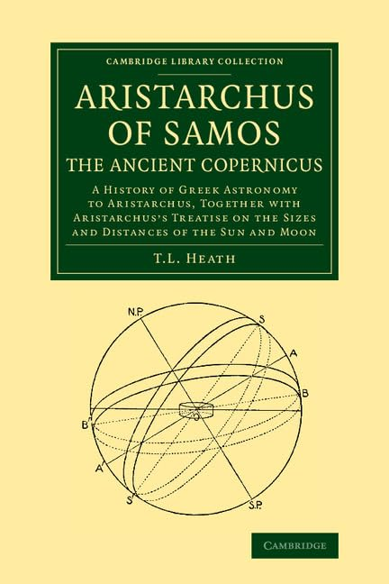

18:51 · 3 OPERE
Eratostene e la circonferenza terrestre.
Il filo del discorso
La presentazione ricostruisce in forma divulgativa il ragionamento con cui Eratostene avrebbe misurato la circonferenza terrestre. Caldarella parte dal lavoro del bibliotecario e cartografo, collega Alessandria e Siene all’osservazione delle ombre e introduce l’ipotesi dei raggi solari paralleli. Ripassate le proporzioni del cerchio, applica il modello geometrico alla stima di circonferenza e raggio. Il riferimento agli Elementi di Euclide accompagna la conclusione sul valore del ragionamento e sulla meraviglia che può nascere da una spiegazione comprensibile del mondo.
I libri nel discorso

Sulle dimensioni e le distanze del Sole e della Luna
Copertina del volume che contiene il trattato: Cambridge University Press · 2013 · ristampa del volume di Thomas Heath del 1913
Copertina del volume di Thomas Heath che comprende il testo greco e la traduzione inglese del trattato di Aristarco. Cambridge, 2013, ristampa dell’edizione del 1913; l’ISBN si riferisce al volume di Heath. L’edizione effettivamente consultata nel video non è accertata.
Aristarco di Samo e il titolo sulle dimensioni e distanze del Sole e della Luna sono annunciati.
Passaggio 5:46 ↗ · Fonti e libro ↗
Gli elementi
Copertina: Bompiani · Tutte le opere, raccolta contenente Gli elementi
La copertina illustra la raccolta Tutte le opere, che include Gli elementi; non è attribuita al video.
Il relatore nomina il proprio Euclide, libro III, proposizione 19, citando la relazione fra tangente e centro del cerchio.
Passaggio 15:02 ↗ · Fonti e libro ↗
Divina Commedia
Identificazione probabile
Copertina: Giunti Barbera · Passepartout, 2021 · edizione di riferimento
L’invito a non ragionare di loro è un’allusione probabile al canto III dell’Inferno, non un titolo annunciato.
Passaggio 18:42 ↗ · Fonti e libro ↗Minutaggi ricavati da testi automatici, da riascoltare. Le identificazioni probabili sono segnalate accanto ai libri.